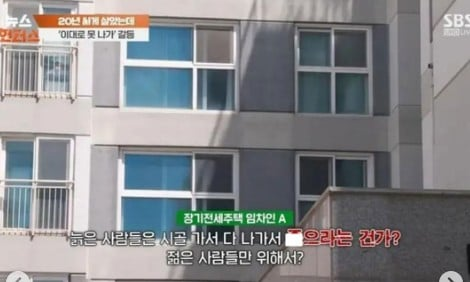

슈카월드에서 20년 장기전세에 대해서 이야기함
좋은 아파트에 좋은 조건
일단 내용은 뭐 다들 알고 있을듯
그리고 이 사람들이 퇴거하면 신혼부부를 위해서 공급할 계획이라고 함
이 내용은 저 사람들 인터뷰에서도 계속 나왔던 내용
저 집을 저 사람들에게 돌려받아서 신혼부부에게 주는건데
가격이 너무 뛰기는 해서 그것도 수억원 수준이긴 한데 보증금도 80% 수준....
중요한건 신혼부부를 대상으로 모집하고
그 신혼부부가 아이를 낳으면 그 집을 매수할수 있는 권리를 줌
아이를 4~5명 출산할경우 시세의 50%로 아파트를 넘겨줌..........
왠지 저기 들어가서 아이를 매년 계획하는 분들이 생길거 같은데.....
대충 아기 1명당 10%씩 집 값을 깍아서 살수 있는 혜택을 주는듯
다들 하레디 좋아했구나